broken_heaven

>> TEMPERATURE >NATURAL;
>> CLIMATE_DOWNFALL >NONE;
>> CIVILIZATION >NULL;
>> DANGER_LEVEL >???/5;
DESCRIPTION
WARNING: THIS PLACE MAY ONLY BE ENTERED BY THOSE CHOSEN BY THE WRITER ON THEIR SLUMBER!
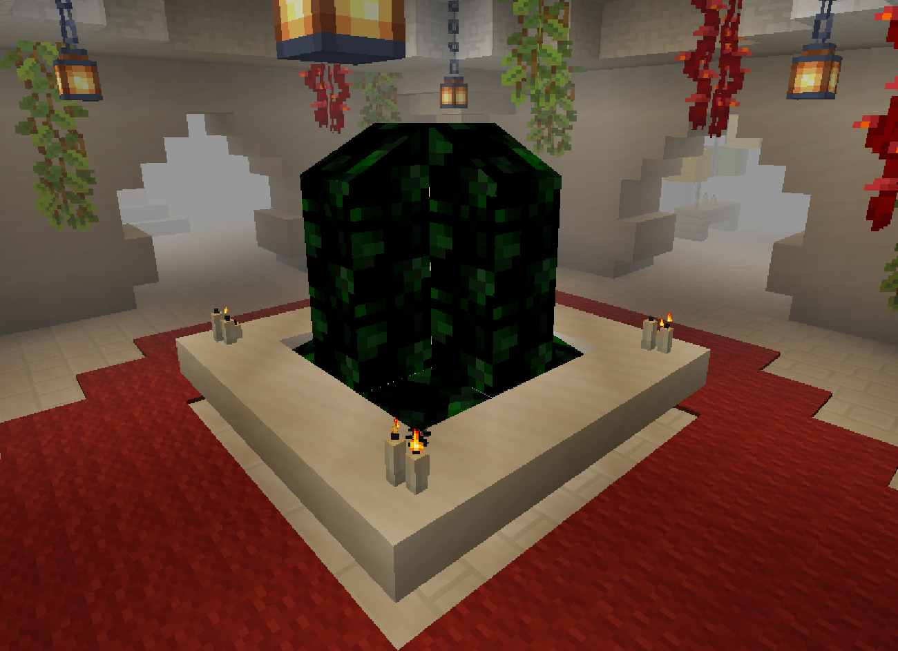
It’s like an endless maze of rooms flooded in a thick white fog as it was simulating the clouds in the sky; its name is a sort of antithesis to “ERROR_3008 (THE SAMSIDE).” Music plays continuously once you enter; it consists of angelic choirs and electronic sounds. It's a soothing piece intended to relax anyone who travels through these hallways. This area consists of 3 sections layered in order as you dive deeply inside this place:
- false_positive.
- source_lab.
- rotting_roots.
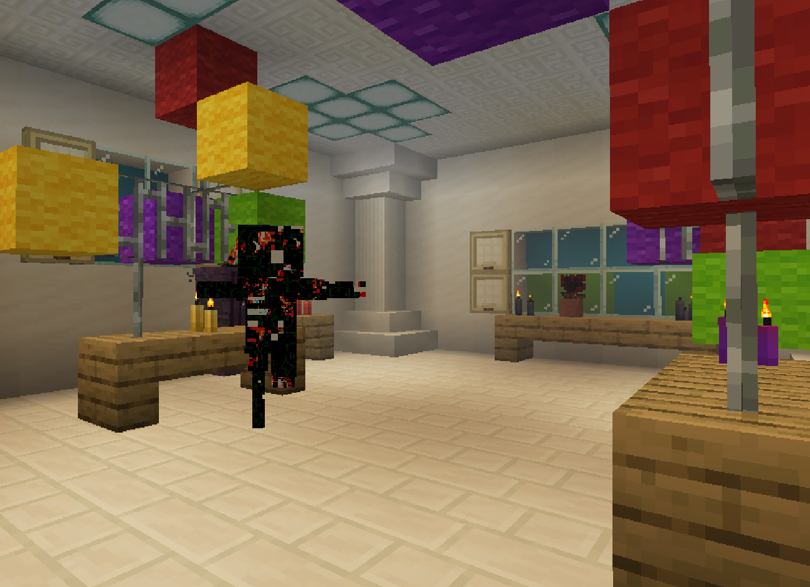
The first one, “false_positive”: It is designed to show the most beautiful side of the place, with pure colors, innocence, and HAPPINESS, among other things; it is important to note that there are certain rooms categorized as “NULL” that do not appear. Always check what’s behind a doorframe before proceeding toward “certain death”; we cannot tolerate any more casualties.
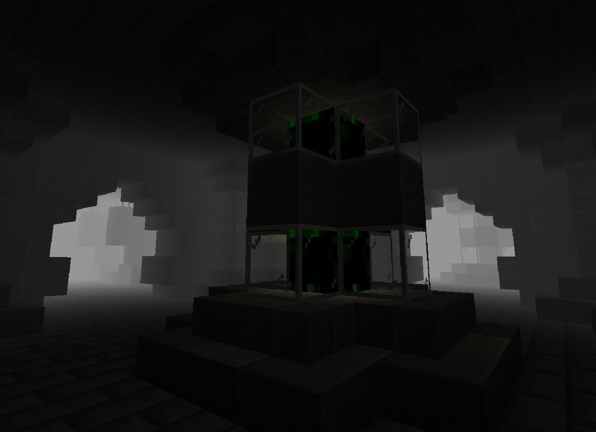
The second one, “source_lab”: This area has somewhat dim lighting, experimentation chambers, test subjects, and a “flow_code” filtering system; unlike the previous one, this area has a somewhat darker tone; however, we don’t know the cause of it or even its meaning.
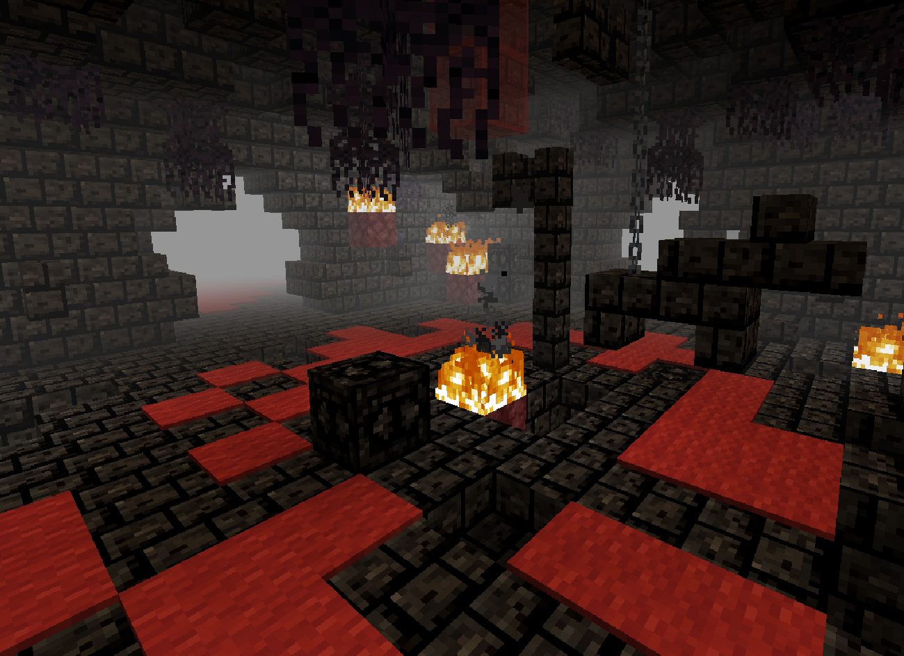
The third one, “rotting_roots”: This area is the last one and is entirely made up of scoria; most of its rooms are traps, ruined, or even infected with lush. It features red carpets in most of its rooms to give that old castle vibe. If you proceed even further, you’ll maybe find nothing at all; we aren’t totally sure because we didn’t investigate even further.
ORIGIN
[NO INFORMATION AVAILABLE]
VEGETATION
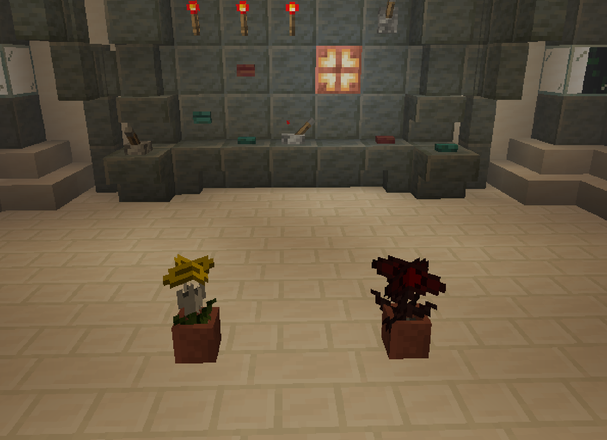
This place doesn’t really have a unique vegetation on its own; it recycles other flowers we’ve seen in other sections. However, there are 2 unique flowers, but the way of getting them is a bit odd. Within this area you can find the “flow_code.” This liquid is capable of corrupting certain objects and replacing them (this is deeply explained later on in RESEARCH ADVANCES).
You can acquire the “Angel Drop” by pouring a “Flaming Hope” inside the liquid; it seems like a pure flower with a halo above it that also produces light.
You can also acquire the “Voidglow” by pouring a “Troublegaze" inside the liquid; this flower is the only real evidence that we have that confirms the existence of “ERROR_3008 (THE SAMSIDE).”
RESEARCH ADVANCES
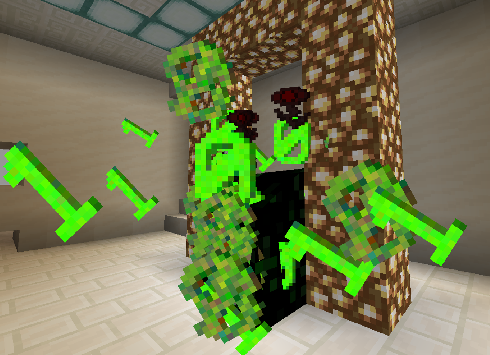
As we mentioned earlier, within these areas you can find a large amount of “flow_code.” This liquid is not a normal liquid at all, because it seems to have the ability to corrupt certain objects and turn them into other things. We’ve been testing it for a bit, trying different objects, and so far this is all we’ve discovered:
- CHERRY_LEAVES → NULLED_CHERRIES
- CHORUS_FRUIT → AGITATED_FRUIT
- ENCHANTED_GOLDEN_APPLE → SINNER_APPLE
- NETHERITE_INGOT → MYSTHICAL_REINFORCERS
- AXOLOTL_IN_A_BUCKET → LORAZEPAM_PILL
- CORRUPTINY → ROOT_OF_CORRUPTION
- EMPTY_ROSE → DEAD_BUSH
- FLAMING_HOPE → ANGEL_DROP
- TROUBLEDGAZE → VOIDGLOW
- ABERRATION_SWORD → DEV_SWORD
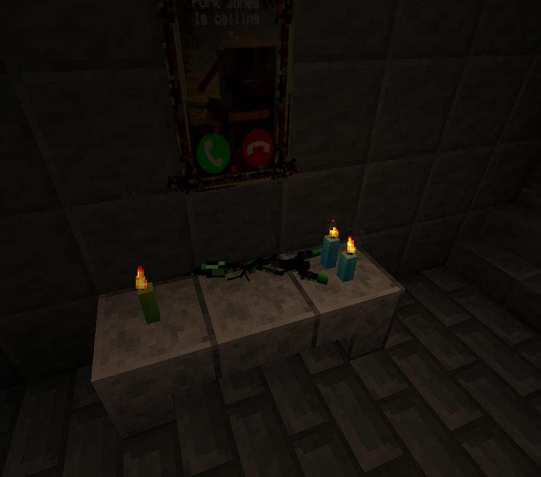
Note: We don't know for sure what other capabilities it has, but these are the methods that have worked for us so far; surely there are even more.
Of all the possible merges, the “DEV_SWORD” is one of the most useful; although the “Aberration Sword” is a bit of a useless tool, the “DEV_SWORD” has a special quality that makes it unique and very useful while traveling inside these halls. This sword is capable of eradicating the “Glitchedmorphen” residual being, and yes, even though it only works on this one being in particular, it’s quite convenient, as this is one of the entities you can’t avoid normally in any way possible.
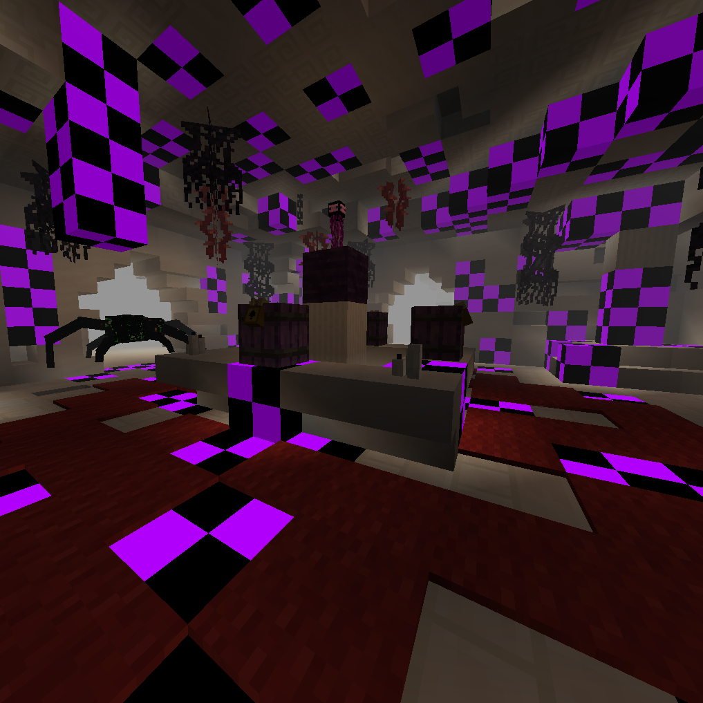
Also, inside this realm we can find things we already documented before, such as “Corrupted Vending Machines,” “Paranoia-Consumer Rods,” “Corrupted Grass,” or even “Seeker Logs” inside some rooms, and something really curious about them is that these things work way differently in this zone.
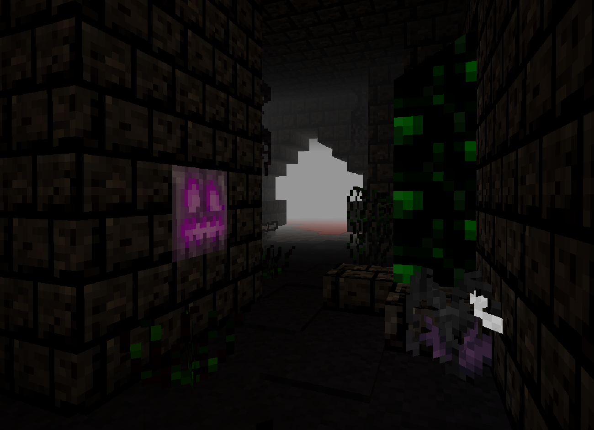
That said, for those who wish to deeply explore this realm, keep in mind that it has several safety measures that could feel like a dictatorship, were it not for the fact that they genuinely ensure the safety of anyone who visits it.
If the user falls into the abyss or gets even slightly stuck on a wall (mostly due to “Glitchedmorphen”) or experiences what is known as “out of bounds,” they are kicked from there to ensure their safety, usually right back to where they were sleeping.
However, it’s important to remember that you MUST NOT dive into the “flow_code” UNDER ANY CIRCUMSTANCES. It is NOT a safe exit! We’ve already had about 23 casualties literally smashed to pieces on the ground due to a fall from great height; some even ended up scattered in pieces across various parts of even different counties! We’re not here to play with death, okay?! Don’t pay any attention to the wheeled robot… In fact, avoid it if you have to; it seems to be explicitly programmed with the intention of killing anyone who visits this area when they least expect it.
MUSIC
This music will constantly play in the background: |
This music will constantly play once you activate the "broken_chase" sequence: |
KNOWN THREATS
WHEELFORM
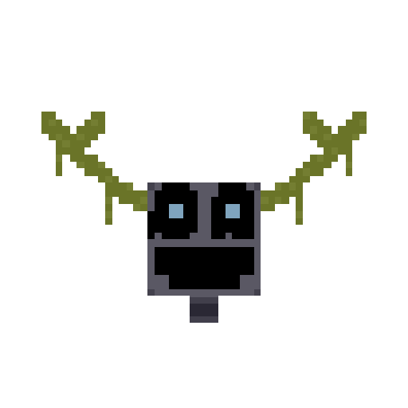
She claims to be the “guide of heaven;” she always starts being friendly, slowly luring one or two people along with her. Let’s just say that those who follow her usually never come back… Some, luckily, do, most likely because they weren’t foolish enough to swim inside the “flow_code,” as we mentioned earlier.
As for the robot, she’s made of VERY hard metal; her mouth forms a static smile, meaning she can only show her emotions through her eyes and horns; she has an orange core on her chest, a hatch beneath it whose purpose is unknown, a purple skirt, a pair of arms with both hands that seems to be like pincers or crab claws, and both of them with a strange pattern; and a pair of wheels that allow her to move with total fluidity around the place. Despite her friendly appearance, I wouldn’t trust her AT ALL; it might be hiding something.
THE FALLEN WRITER + RESIDUAL BEINGS
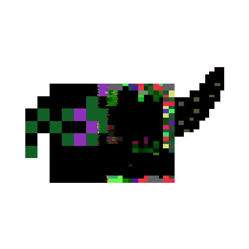
The “Residual Beings” are entities we’ve already documented; there are deformed and corrupted versions of “Rottenmorphen” and “PG/K.” Both exist solely to increase your fear. According to Wheelform, these beings are controlled by “The Writer,” who uses them strategically to ambush and trap his victims. We don’t know much else about these beings.